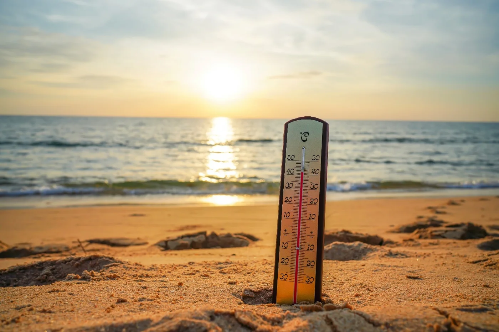
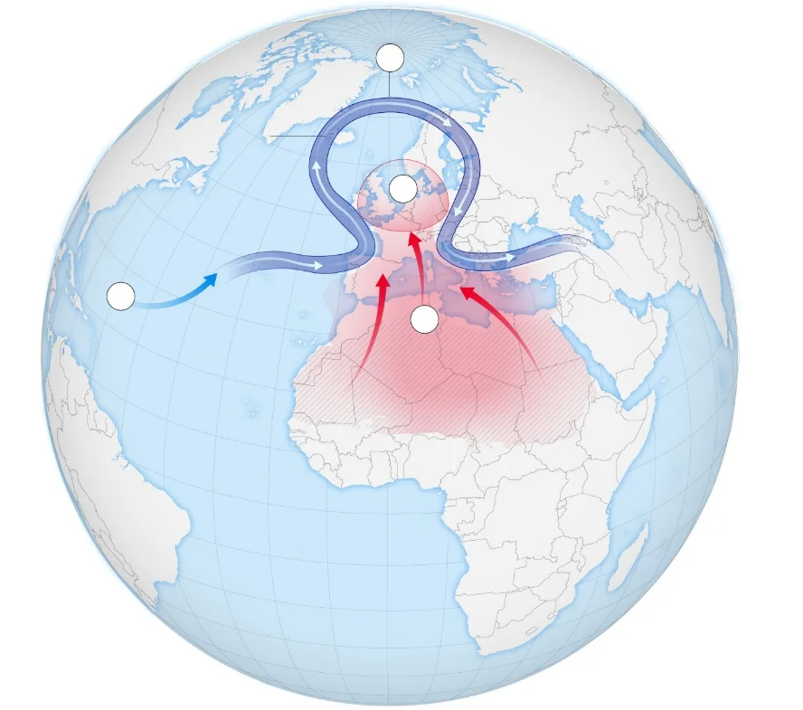

ഈ വർഷം വാർത്താ ചാനലുകളിലൂടെയും സാമൂഹിക മാധ്യമങ്ങളിലൂടെയും ലോകം വലിയൊരു അമ്പരപ്പോടെയാണ് യൂറോപ്പിനെ ചുട്ടുപൊള്ളിച്ച ഉഷ്ണതരംഗത്തിന്റെ ദൃശ്യങ്ങൾ കണ്ടത്. പതിറ്റാണ്ടുകളായി കഠിനമായ ശൈത്യകാലത്തിനും മഞ്ഞുവീഴ്ചയ്ക്കും പേരുകേട്ട രാജ്യങ്ങളിൽ, ആളുകൾ കൊടുംചൂടിൽ നിന്ന് രക്ഷപ്പെടാൻ നഗരങ്ങളിലെ പൊതു ജലധാരകൾക്ക് കീഴിൽ കൂട്ടത്തോടെ നിൽക്കുന്നതും, തടാകങ്ങളിലും നദികളിലും ഇറങ്ങി ആശ്വാസം തേടുന്നതും, എയർ കണ്ടീഷനറുകൾക്കും ഫാനുകൾക്കുമായി കടകളിൽ വരിനിൽക്കുന്നതുമായ കാഴ്ചകൾ ലോകമെമ്പാടും വലിയ വാർത്തയായി മാറി. യൂറോപ്പിൽ താമസിക്കുന്ന മലയാളികൾ ഉൾപ്പെടെ പലരുടെയും അനുഭവങ്ങളിലൂടെ ഈ അസാധാരണമായ ചൂടിന്റെ തീവ്രത മലയാളികൾ ഉൾപ്പെടെയുള്ളവർ നേരിട്ട് മനസ്സിലാക്കിയിട്ടുണ്ടാകും. ഈ കടുത്ത ചൂടിൽ നിന്ന് രക്ഷപ്പെടാൻ തടാകങ്ങളിലും നദികളിലും ഇറങ്ങിയ നിരവധി പേർ മുങ്ങിമരിച്ച ദാരുണമായ സംഭവങ്ങൾ റിപ്പോർട്ട് ചെയ്യപ്പെട്ടു. ഫ്രാൻസിൽ മാത്രം ഇത്തരത്തിൽ അമ്പതിലധികം പേർ മരിച്ചതായി ഔദ്യോഗിക റിപ്പോർട്ടുകൾ വ്യക്തമാക്കുന്നു1. കൂടാതെ, പാർക്ക് ചെയ്തിരുന്ന കാറിനുള്ളിൽ കുടുങ്ങിപ്പോയ കുട്ടികൾ ചൂട് താങ്ങാനാവാതെ മരിച്ച സംഭവവും ഞെട്ടിക്കുന്നതായിരുന്നു2. പ്രാദേശിക ആരോഗ്യ ഏജൻസികളുടെ പ്രാഥമിക കണക്കുകൾ പ്രകാരം ഈ വർഷം യൂറോപ്പിൽ ഏകദേശം ആയിരത്തിമുന്നൂറോളം പേർക്ക് ജീവൻ നഷ്ടപ്പെടാൻ കഠിനമായ ചൂട് നേരിട്ടോ അല്ലാതെയോ കാരണമായിട്ടുണ്ട്.
ഈ പ്രതിസന്ധി മനുഷ്യരുടെ ആരോഗ്യത്തിൽ മാത്രം ഒതുങ്ങിനിൽക്കുന്ന ഒന്നായിരുന്നില്ല. യൂറോപ്പിന്റെ വൈദ്യുതി ഉൽപ്പാദനത്തിൽ വലിയൊരു പങ്കുവഹിക്കുന്ന ആണവനിലയങ്ങളുടെ പ്രവർത്തനത്തെപ്പോലും ഇത് സാരമായി ബാധിച്ചു. ആണവനിലയങ്ങളിലെ റിയാക്ടറുകൾ തണുപ്പിക്കാൻ പ്രധാനമായും നദികളിലെ വെള്ളമാണ് ഉപയോഗിക്കുന്നത്. എന്നാൽ കനത്ത ചൂട് കാരണം നദികളിലെ ജലത്തിന്റെ താപനില സുരക്ഷാ പരിധിക്കപ്പുറം ഉയർന്നതോടെ, പരിസ്ഥിതി നാശം ഒഴിവാക്കാൻ പല ആണവനിലയങ്ങൾക്കും അവയുടെ ഉത്പാദനം കുറയ്ക്കുകയോ താൽക്കാലികമായി നിർത്തിവയ്ക്കുകയോ ചെയ്യേണ്ടി വന്നു2. ഇതിനു പുറമെ, കനത്ത ചൂടിൽ ട്രാം പാളങ്ങൾ ചുട്ടുപഴുത്തു അതുമായി ചേർന്നുള്ള സീലൻ്റ് (Sealant) ഉരുകി ഒലിച്ചു പാളത്തിൽനിന്ന് അടർന്നു മാറിയത് കാരണം പലയിടത്തും പൊതുഗതാഗത സംവിധാനം ആകെ താറുമാറായി.
എന്നാൽ യൂറോപ്പിന്റെ ആധുനിക ചരിത്രത്തിൽ ഇതാദ്യമായല്ല ഇത്തരം ദുരന്തം സംഭവിക്കുന്നത്. രണ്ടായിരത്തി മൂന്നിൽ ഉണ്ടായ അതിശക്തമായ ഉഷ്ണതരംഗത്തിൽ ഏകദേശം എഴുപതിനായിരത്തോളം ആളുകൾ മരിച്ചുണ്ടാകാം എന്നാണ് പഠനങ്ങൾ കാണിക്കുന്നത്3. കൂടാതെ കഴിഞ്ഞ മൂന്ന് പതിറ്റാണ്ടിനിടെ യൂറോപ്പിലെ ഉഷ്ണതരംഗങ്ങളുടെ എണ്ണവും ദൈർഘ്യവും തീവ്രതയും ഗണ്യമായി വർധിച്ചതായി ഗവേഷകർ ചൂണ്ടിക്കാണിക്കുന്നു4. ഇതൊക്കെ കാണുമ്പോൾ ഇന്ത്യയെപ്പോലെ സാധാരണയായി വേനൽക്കാലത്ത് നാൽപ്പത് ഡിഗ്രി സെൽഷ്യസിന് മുകളിൽ താപനില അനുഭവപ്പെടുന്ന രാജ്യങ്ങളിൽ നിന്നുള്ളവർക്ക് സ്വാഭാവികമായും ഒരു സംശയം തോന്നാം. നമ്മുടെ നാട്ടിൽ കടുത്ത ചൂട് ഒരു പുതിയ കാര്യമല്ല, എന്നിട്ടും യൂറോപ്പിലെ ചൂട് എന്തുകൊണ്ടാണ് ഇത്ര വലിയ ദുരന്തമായി മാറുന്നത്? സമാനമായ താപനില ഇന്ത്യയിൽ വലിയ പ്രതിസന്ധി സൃഷ്ടിക്കാത്തത് എന്തുകൊണ്ടാണ്? ഈ ചോദ്യങ്ങൾക്കുള്ള ഉത്തരങ്ങൾ കണ്ടെത്താൻ, ഉഷ്ണതരംഗത്തിന് പിന്നിലെ ഭൗതികശാസ്ത്രം, അവിടുത്തെ ഭൂമിശാസ്ത്രം, മനുഷ്യരുടെ ജീവിതരീതി എന്നിവയുടെ പങ്ക് നാം വിശദമായി മനസ്സിലാക്കേണ്ടതുണ്ട്.

സാധാരണയേക്കാൾ വളരെ ഉയർന്ന താപനില തുടർച്ചയായി ഏതാനും ദിവസങ്ങൾ (സാധാരണയായി 2 മുതൽ 6 ദിവസം വരെ3) അനുഭവപ്പെടുന്ന അവസ്ഥയാണ് പൊതുവെ ഉഷ്ണതരംഗം എന്ന് വിളിക്കപ്പെടുന്നത്. എന്നാൽ ഈ ഉയർന്ന താപനില എന്നത് എല്ലാ രാജ്യങ്ങൾക്കും ബാധകമായ നാൽപ്പത് ഡിഗ്രി അല്ലെങ്കിൽ നാൽപ്പത്തഞ്ച് ഡിഗ്രി പോലൊരു സ്ഥിരമായ മാനദണ്ഡമല്ല. മറിച്ച്, ഒരു പ്രദേശത്തെ താപനില സാധാരണ അനുഭവപ്പെടുന്ന താപനിലയിൽ നിന്ന് എത്രത്തോളം വർധിച്ചിരിക്കുന്നുവെന്നും കൂടാതെ അത് എത്ര ദിവസം നിലനിലനിൽക്കുന്നു എന്നതുമാണ് പ്രധാനമായി പ്രധാനമായും പരിഗണിക്കുന്നത്. അതായത്, രാജസ്ഥാനിൽ വേനൽക്കാലത്ത് സാധാരണയായി അനുഭവപ്പെടുന്ന നാൽപ്പത്തഞ്ച് ഡിഗ്രി താപനില അവിടെ ഒരു ഉഷ്ണതരംഗം ആകണമെന്നില്ല. എന്നാൽ അതേ താപനില യൂറോപ്പിലോ ഹിമാലയൻ പ്രദേശങ്ങളിലോ രേഖപ്പെടുത്തിയാൽ അത് അതിതീവ്രമായ ദുരന്തമായി കണക്കാക്കപ്പെടും5.
അതുപോലെ, എല്ലാവരെയും ഉഷ്ണതരംഗം ഒരുപോലെ ബാധിക്കണമെന്നില്ല. പ്രായമായവർ, കുട്ടികൾ, ഗർഭിണികൾ, മാനസികവും ശാരീരികവുമായി ബുദ്ധിമുട്ടുകൾ അനുഭവിക്കുന്നവർ, തുറസ്സായ സ്ഥലങ്ങളിൽ ജോലി ചെയ്യുന്ന തൊഴിലാളികൾ, സാമ്പത്തികമായി പിന്നാക്കം നിൽക്കുന്നവർ എന്നിവരാണ് ഉഷ്ണതരംഗത്തിന്റെ ആഘാതം ഏറ്റവും കൂടുതൽ നേരിടുന്ന വിഭാഗങ്ങൾ6. അതുകൊണ്ട് ഗവേഷകരും, ഭരണകൂടങ്ങളും ഒരു പ്രദേശത്തിന്റെ കാലാവസ്ഥ, അവിടുത്തെ ജനങ്ങളുടെ ജീവിതസാഹചര്യങ്ങൾ, ആരോഗ്യപ്രശ്നങ്ങൾ, സാമൂഹിക സാഹചര്യങ്ങൾ എന്നിവയെല്ലാം പരിഗണിച്ചാണ് ഉഷ്ണതരംഗം നിർവചിക്കുന്നത്. ഇത്തരത്തിലുള്ള നിർവചനങ്ങളാണ് വ്യത്യസ്ത പ്രദേശങ്ങളെ കൃത്യമായി താരതമ്യം ചെയ്യാനും, കടുത്ത ചൂട് മനുഷ്യജീവിതത്തിലും സമൂഹത്തിലും ഉണ്ടാക്കുന്ന യഥാർത്ഥ പ്രത്യാഘാതങ്ങൾ മനസ്സിലാക്കാനും സഹായിക്കുന്നത് .
ഒരു പ്രദേശത്ത് ഉഷ്ണതരംഗം രൂപപ്പെടുന്നത് അന്തരീക്ഷത്തിൽ നടക്കുന്ന നിരവധി ഭൗതിക പ്രക്രിയകളുടെ സംയുക്തഫലമായാണ്. സാധാരണ സാഹചര്യങ്ങളിൽ പകൽ ലഭിക്കുന്ന സൂര്യപ്രകാശം ആദ്യം ഭൂമിയുടെ ഉപരിതലമായ മണ്ണ്, പാറകൾ, നഗരങ്ങളിലെ കോൺക്രീറ്റ് കെട്ടിടങ്ങൾ, റോഡുകൾ, സമുദ്രങ്ങൾ എന്നിവയെ ചൂടാക്കുന്നു. ഈ ചൂട് പിന്നീട് ഉപരിതലത്തോട് ചേർന്നുള്ള വായുവിലേക്ക് കൈമാറപ്പെടുന്നു. ഇങ്ങനെ ചൂടായ വായുവിന്റെ സാന്ദ്രത കുറയുന്നതിനാൽ അത് മുകളിലേക്ക് ഉയരുകയും, അതിന്റെ സ്ഥാനത്തേക്ക് താരതമ്യേന തണുത്ത വായു എത്തുകയും ചെയ്യുന്നു. ഈ പ്രക്രിയയെയാണ് സംവഹനം (Convection) എന്ന് വിളിക്കുന്നത്. ഭൂമിയുടെ ഉപരിതലത്തിൽ അടിഞ്ഞുകൂടുന്ന ചൂട് അന്തരീക്ഷത്തിന്റെ മുകളിലേക്ക് എത്തിക്കാൻ സഹായിക്കുന്ന ഒരു സ്വാഭാവിക സംവിധാനം കൂടിയാണിത്. അതുകൊണ്ടുതന്നെ ഒരു പ്രദേശം അമിതമായി ചൂടാകാതെ നിലനിൽക്കാൻ ഇത് സഹായിക്കുന്നു.
എന്നാൽ ചിലപ്പോൾ അന്തരീക്ഷത്തിൽ രൂപപ്പെടുന്ന പ്രത്യേക കാലാവസ്ഥാ സാഹചര്യങ്ങൾ ഈ സ്വാഭാവിക പ്രവർത്തനത്തെ തടസ്സപ്പെടുത്തുന്നു. അതിനൊരു ഉദാഹരണമാണ് അന്തരീക്ഷത്തിന്റെ മുകൾഭാഗത്ത് രൂപംകൊള്ളുന്ന ശക്തമായ ഉയർന്ന മർദ്ദമേഖല (High-pressure system). ഈ ഉയർന്ന മർദ്ദമേഖലയുടെ സ്വാധീനത്തിൽ മുകളിലുള്ള വായു പതുക്കെ താഴേക്ക് ഇറങ്ങാൻ കാരണമാകും (Subsidence). അങ്ങനെ താഴേക്ക് വരുംതോറും അന്തരീക്ഷമർദ്ദം കൂടുന്നതിനാൽ ഈ വായുവിന്റെ വ്യാപ്തം പെട്ടന്ന് കുറയുകയും അതിലൂടെ അത് ചൂടാകുകയും ചെയ്യും. ഇത് മനസ്സിലാക്കാൻ ഒരു ലളിതമായ ഉദാഹരണമുണ്ട്. സൈക്കിൾ പമ്പ് ഉപയോഗിച്ച് ടയറിൽ കാറ്റടിക്കുമ്പോൾ പമ്പ് കുറച്ച് സമയത്തിനുള്ളിൽ ചൂടാകുന്നത് നിങ്ങൾ ശ്രദ്ധിച്ചിട്ടുണ്ടാകും. പമ്പിനുള്ളിലെ വായുവിന്റെ വ്യാപ്തം നമ്മൾ കൊടുക്കുന്ന മർദ്ദം കാരണം പെട്ടന്ന് കുറയുന്നത് കൊണ്ടാണ് ഇത് സംഭവിക്കുന്നത്. ഇതുപോലെ ചൂടാകുന്ന വായു ഭൂമിയുടെ ഉപരിതലത്തിനടുത്തുള്ള താപനില ഉയർത്തുന്നു. കൂടാതെ ഇങ്ങനെ വായു താഴോട്ടിറങ്ങുന്നതിനാൽ നേരത്തെ പറഞ്ഞ സ്വഭാവിക സംവഹന പ്രക്രിയയെ തടസ്സപ്പെടുത്തുന്നു. അതായത് ചൂട് വായുവിനെ പുറത്തു കളയാത്ത ഒരു അടപ്പു പോലെ ഈ ഉയർന്ന മർദ്ദമേഖല പ്രവർത്തിക്കുന്നു. ഇങ്ങനെ ഒരു പ്രദേശത്തു ദിവസംതോറും ലഭിക്കുന്ന ചൂട് പുറത്തേക്ക് പോകാതെ നിൽക്കുന്നതിനാൽ അവിടെയുള്ള താപനില ക്രമേണ ഉയർന്നുകൊണ്ടിരിക്കും. ഇങ്ങനെ ഒരു പ്രദേശത്തെ വായു മുകളിൽ നിന്നും താഴെ നിന്നും ചൂടേറ്റ് ഒരു “ദം ബിരിയാണി” ചെമ്പിൽ വേവുന്നതുപോലെ കുടുങ്ങിക്കിടക്കുന്ന അവസ്ഥയെയാണ് കാലാവസ്ഥാ ശാസ്ത്രത്തിൽ ഹീറ്റ് ഡോം (Heat Dome) എന്ന് വിളിക്കുന്നത്.
ഇതിനു പുറമെ, മുകളിലെ വായു ഇങ്ങനെ തുടർച്ചയായി താഴേക്ക് ഇറങ്ങുന്നതിനാൽ മഴമേഘങ്ങൾ രൂപപ്പെടാതെ ആകാശം മിക്കപ്പോഴും തെളിഞ്ഞ നിലയിലായിരിക്കും ഉണ്ടാകുക. ഇതു കൂടുതൽ സൂര്യപ്രകാശം നേരിട്ട് ഭൗമോപരിതലത്തിൽ പതിക്കാൻ കാരണമാകുകയും അതിലൂടെ ചൂട് വീണ്ടും കൂടുകയും ചെയ്യും. എന്നിരുന്നാലും, എല്ലാ ഉഷ്ണതരംഗങ്ങളും ഹീറ്റ് ഡോമിന്റെ ഫലമായി മാത്രം രൂപപ്പെടണമെന്നില്ല. ഒരു ഉഷ്ണതരംഗത്തിന്റെ രൂപീകരണത്തിലും തീവ്രതയിലും ഹീറ്റ് ഡോം ഒരു പ്രധാന ഘടകമായിരിക്കാമെങ്കിലും, അന്തരീക്ഷത്തിലെ മറ്റ് നിരവധി പ്രക്രിയകളും അതിൽ നിർണായക പങ്കുവഹിക്കുന്നു. അതായത് ഒരു പ്രദേശത്തെ അന്തരീക്ഷമർദ്ദം, കാറ്റിന്റെ ഗതിമാറ്റങ്ങൾ, സമുദ്രോപരിതല താപനില, വായുവിലെയും മണ്ണിലെയും ജലാംശത്തിന്റെ അളവ്, പ്രാദേശിക ഭൂപ്രകൃതി തുടങ്ങിയവക്കെല്ലാം ഇതിൽ പ്രധാന പങ്കുണ്ട് 5.

തണുത്തുറഞ്ഞ ഉത്തരധ്രുവത്തോട് ചേർന്ന് കിടക്കുന്ന യൂറോപ്പിൽ ഇത്രയും കടുത്ത ഉഷ്ണതരംഗങ്ങൾ രൂപപ്പെടാൻ പ്രധാന കാരണം അവിടുത്തെ അന്തരീക്ഷ കാറ്റുകളിലുണ്ടാകുന്ന വലിയ ഗതിമാറ്റങ്ങളാണ്. ഇതിൽ ഏറ്റവും പ്രധാനപ്പെട്ടത് പോളാർ ജെറ്റ് സ്ട്രീം (Polar Jet Stream) എന്ന അതിശക്തമായ കാറ്റാണ്. ഉത്തരധ്രുവത്തിൽ നിന്നുള്ള അതിശൈത്യമുള്ള വായുവിനെയും തെക്കുനിന്നുള്ള ഉഷ്ണമേഖലാ വായുവിനെയും വേർതിരിക്കുന്ന അതിർത്തിയെയാണ് പോളാർ ഫ്രണ്ട് (Polar Front) എന്ന് വിളിക്കുന്നത്. ഈ അതിർത്തിയിൽ, ഭൗമോപരിതലത്തിൽ നിന്ന് ഏകദേശം 7 മുതൽ 12 കിലോമീറ്റർ വരെ ഉയരത്തിൽ, മണിക്കൂറിൽ നൂറുകണക്കിന് കിലോമീറ്റർ വേഗത്തിൽ പടിഞ്ഞാറ് നിന്ന് കിഴക്കോട്ട് ഉത്തരധ്രുവത്തെ ചുറ്റി വീശുന്ന അതിശക്തമായ കാറ്റാണ് പോളാർ ജെറ്റ് സ്ട്രീം. ശൈത്യകാലത്ത് ഈ അതിർത്തി ഉത്തരധ്രുവത്തിൽ നിന്നും അകന്നു തെക്കോട്ടു നീങ്ങുകയും യൂറോപ്പ് ഉൾപ്പെടെയുള്ള മധ്യ അക്ഷാംശ പ്രദേശങ്ങളിൽ കൊടുംതണുപ്പും മഞ്ഞുവീഴ്ചയും അനുഭവപ്പെടുകയും ചെയ്യുന്നു. എന്നാൽ വേനൽക്കാലത്ത് അത് വീണ്ടും വടക്കോട്ടു നീങ്ങി ഉത്തരധ്രുവത്തോടടുക്കുന്നതിനാൽ ഉഷ്ണമേഖലയിൽ നിന്നുള്ള ചൂട് വായു ഈ പ്രദേശങ്ങളിൽ വ്യാപിക്കുന്നതിനാൽ ചൂടുകാലാവസ്ഥ ലഭിക്കുന്നു.
എന്നാൽ ഭൂമിയുടെ എല്ലാ ഭാഗവും ഒരേ നിരക്കിലല്ല ചൂടാകുക. ഉദാഹരണത്തിന്, യൂറോപ്പിന് തെക്കായി സ്ഥിതിചെയ്യുന്ന ലോകത്തിലെ ഏറ്റവും വലിയ ഉഷ്ണമരുഭൂമിയായ സഹാറ അതിവേഗം ചൂടാകുന്നു. ഇത് വഴി വേനൽക്കാലത്ത് സഹാറയിൽ നിന്നുള്ള അത്യുഷ്ണമായ വായു വടക്കോട്ട് വ്യാപിക്കുന്ന സാഹചര്യം ഉണ്ടാകുന്നു. ഇവ പിന്നീട് വലിയ തോതിലുള്ള മറ്റു അന്തരീക്ഷ ചലനങ്ങളുമായി (Atmospheric dynamics) ചേർന്ന് പോളാർ ജെറ്റ് സ്ട്രീമിൽ വലിയ വളവുകൾ രൂപപ്പെടുത്തുന്നു. ഈ വളവുകൾ ചില സന്ദർഭങ്ങളിൽ ഗ്രീക്ക് അക്ഷരമായ ഒമേഗ (Ω) പോലെയോ തലകീഴായി വെച്ച ഇംഗ്ലീഷ് അക്ഷരം U പോലെയോ കാണപ്പെടും. ഇത്തരം അവസ്ഥക്കു ഒരു പ്രദേശത്തെ ദിനാന്തരീക്ഷ സ്ഥിതിയെ (Dailt weather) ദിവസങ്ങളോളം ഒരു സ്ഥലത്തു തടഞ്ഞു നിർത്താൻ പലപ്പോഴും സാധിക്കാറുണ്ട്, അതിനാൽ ഇതിനെ ഒമേഗ ബ്ലോക്ക് (Omega block) എന്ന് വിളിക്കുന്നു. ഈ ഒമേഗ ബ്ലോക്കിന്റെ മധ്യഭാഗത്ത് രൂപപ്പെടുന്ന ഉയർന്ന മർദ്ദ മേഖല മുകളിലെ വായുവിനെ താഴേക്ക് ഇറക്കുന്നു. ഇതുവഴി ഹീറ്റ് ഡോം രൂപപ്പെടാൻ അനുകൂല സാഹചര്യം സൃഷ്ടിക്കപ്പെടുകയും, അത് പിന്നീട് ഉഷ്ണതരംഗത്തിലേക്ക് നയിക്കുകയും ചെയ്യും7,8,9.
എന്നാൽ ഒമേഗ ബ്ലോക്കിന്റെ ഇരുവശങ്ങളിലും ഇതിന് നേർവിപരീതമായ കാലാവസ്ഥയാണ് അനുഭവപ്പെടുന്നത്. അവിടെയുണ്ടാകുന്ന കുറഞ്ഞമർദ്ദ മേഖലകൾ (Low pressure system) മൂലം ഭൂമിയുടെ ഉപരിതലത്തിലെ വായു മുകളിലേക്ക് ഉയരുന്നു. ഇങ്ങനെ ഉയരുന്ന വായു വികസിക്കുന്നതിനാൽ തണുക്കുകയും അതിലെ ജലബാഷ്പം ഘനീഭവിച്ച് (Condense) മേഘങ്ങളും മഴയും രൂപപ്പെടുകയും ചെയ്യുന്നു. അതുകൊണ്ടാണ് ഒമേഗ ബ്ലോക്കിന്റെ മധ്യഭാഗത്ത് അതിശക്തമായ ചൂട് അനുഭവപ്പെടുമ്പോൾ, അതിന്റെ ഇരുവശങ്ങളിൽ താരതമ്യേന തണുപ്പുള്ള കാലാവസ്ഥയും മഴയും ഒരേസമയം അനുഭവപ്പെടുന്നത്.9
ഇന്ത്യയിലെ 40°C താപനില നാം വലിയ ബുദ്ധിമുട്ടുകളില്ലാതെ നേരിടുമ്പോൾ, യൂറോപ്പിൽ ഈ അവസ്ഥയെ തീവ്രമാക്കുന്നത് ശാരീരികവും പാരിസ്ഥിതികവും സാംസ്കാരികവുമായ നിരവധി ഘടകങ്ങളാണ്. ഇന്ത്യക്കാർ തലമുറകളായി ചൂടുള്ള കാലാവസ്ഥയിൽ ജീവിക്കുന്നതിനാൽ ഉയർന്ന താപനിലയോട് ശരീരത്തിനും ജീവിതരീതികൾക്കും ഒരു പരിധിവരെ പൊരുത്തപ്പെടാൻ കഴിഞ്ഞിട്ടുണ്ട്. എന്നാൽ തണുപ്പുമായി പൊരുത്തപ്പെട്ട യൂറോപ്പുകാരുടെ ശരീരത്തിന് താപനില പെട്ടെന്ന് ഉയർന്ന നിലയിലെത്തുമ്പോൾ അത് അസഹനീയമായി വരും.
കെട്ടിടങ്ങളുടെ നിർമ്മാണരീതിയാണ് യൂറോപ്പിലെ മറ്റൊരു പ്രധാന വില്ലൻ. വർഷത്തിൽ കൂടുതൽ സമയവും കടുത്ത തണുപ്പനുഭവപ്പെടുന്നതിനാൽ, ഇന്ത്യയിലെ വീടുകളെപ്പോലെ പരമാവധി വായുസഞ്ചാരം ലഭിക്കുന്ന രൂപകൽപ്പന അവിടെയില്ല. അതായത് ഡബിൾ ഗ്ലേസ്ഡ് ഗ്ലാസുകളും കട്ടിയുള്ള ഭിത്തികളും ഈർപ്പം തടയുന്ന വസ്തുക്കളും ഉപയോഗിച്ചുള്ള അവരുടെ നിർമാണ രീതി പരമാവധി ചൂട് മുറിക്കകത്തു തങ്ങിനിൽക്കാൻ സഹായിക്കുന്നു. ഇതിനൊപ്പം വേനൽക്കാലത്ത് അവിടെ പതിനഞ്ച് മുതൽ പതിനെട്ട് മണിക്കൂർ വരെയാണ് പകലിന്റെ ദൈർഘ്യം.സൂര്യൻ രാത്രി പത്ത് മണിയോടെ മാത്രം അസ്തമിക്കുകയും രാവിലെ അഞ്ചു മണിക്ക് മുന്നേ ഉദിക്കുകയും ചെയ്യുമ്പോൾ, ദൈർഘ്യമേറിയ പകൽ സമയത്ത് കൂടുതൽ സൗരോർജം ഭൂമിയും കെട്ടിടങ്ങളും ആഗിരണം ചെയ്യുന്നു. അതിനൊപ്പം രാത്രിയിലെ താപനിലയും ഉയർന്ന നിലയിൽ തുടരുമ്പോൾ ഇവയ്ക്ക് ആവശ്യത്തിന് തണുക്കാൻ കഴിയാതെ വരുകയും അടുത്ത ദിവസത്തെ ചൂട് കൂടുതൽ ശക്തമാവുകയും ചെയ്യുന്നു.
കടുത്ത ചൂടിൽ നിന്ന് രക്ഷപ്പെടാൻ ആവശ്യമായ അടിസ്ഥാന സൗകര്യങ്ങളുടെ അഭാവമാണ് മറ്റൊരു പ്രധാന പ്രതിസന്ധി. വർഷത്തിൽ രണ്ടാഴ്ചയോ മൂന്നാഴ്ചയോ മാത്രം ചൂട് അനുഭവപ്പെടുന്ന യൂറോപ്പിൽ മിക്ക വീടുകളിലും എയർ കണ്ടീഷനറുകളോ സീലിംഗ് ഫാനുകളോ സ്ഥാപിക്കാറില്ല. കടുത്ത ചൂട് വരുമ്പോൾ ആളുകൾ പെട്ടെന്ന് ഇവ വൻതോതിൽ ഉപയോഗിക്കുന്നത് വൈദ്യുതി ശൃംഖലകളെ തകരാറിലാക്കുകയും വൻ ഊർജ്ജ പ്രതിസന്ധിയിലേക്ക് നയിക്കുകയും ചെയ്യുന്നു. ഉയർന്ന താപനില കാരണം വൈദ്യുതി ഉല്പാദന കേന്ദ്രങ്ങളുടെ കാര്യക്ഷമത കുറയുന്നത് ഈ പ്രതിസന്ധിയുടെ ആക്കം കൂട്ടുന്നു.
ഏതെങ്കിലും ഒരു ഒറ്റപ്പെട്ട ഉഷ്ണതരംഗത്തെ പൂർണ്ണമായും ആഗോളതാപനത്തിന്റെ ഫലമായി മാത്രം കണക്കാക്കാൻ കഴിയില്ല. എന്നാൽ പഠനങ്ങൾ കാണിക്കുന്നത് ഇത്തരം സംഭവങ്ങളുടെ സാധ്യതയും തീവ്രതയും ആഗോളതാപനം ഗണ്യമായി വർദ്ധിപ്പിക്കുന്നുവെന്നാണ്. ആഗോളതാപനം ഭൂമിയുടെ ശരാശരി താപനില തുടർച്ചയായി ഉയർത്തിക്കൊണ്ടിരിക്കുകയാണ്, ഇതിൽ ലോകത്തിലെ ഏറ്റവും വേഗത്തിൽ ചൂടാകുന്ന ഭൂഖണ്ഡങ്ങളിലൊന്നാണ് ഇന്ന് യൂറോപ്പ്2. ഇത് വേനൽക്കാലത്തെ ചൂട് അതിവേഗം മനുഷ്യർക്ക് താങ്ങാനാവാത്ത അവസ്ഥയിലേക്ക് എത്താൻ ഒരുകാരണമാകുന്നു. ഇതിനുപുറമെ ഉത്തരധ്രുവം മറ്റ് പ്രദേശങ്ങളെ അപേക്ഷിച്ച് വേഗത്തിൽ ചൂടാകുന്ന ആർട്ടിക് ആംപ്ലിഫിക്കേഷൻ (Arctic Amplification) എന്ന പ്രതിഭാസം ജെറ്റ് സ്ട്രീമിന്റെ സ്വഭാവത്തെ സ്വാധീനിക്കുകയും അത് വഴി ദീർഘകാലം നീണ്ടുനിൽക്കുന്ന കാലാവസ്ഥാ വ്യതിയാനങ്ങൾക്ക് കാരണമായേക്കാമെന്നും നിരവധി പഠനങ്ങൾ സൂചിപ്പിക്കുന്നു. എന്നിരുന്നാലും, ഇതിന്റെ കൃത്യമായ പങ്കിനെക്കുറിച്ചുള്ള ഗവേഷണം ഇപ്പോഴും തുടരുകയാണ്10. കൂടാതെ സമുദ്രോപരിതല താപനിലയിലുണ്ടാകുന്ന വലിയ വർദ്ധനവും, മണ്ണിലെ ഈർപ്പം വേഗത്തിൽ നഷ്ടപ്പെട്ട് വരൾച്ച ഉണ്ടാകുന്നതും ബാഷ്പീകരണം വഴിയുള്ള സ്വാഭാവിക തണുപ്പിക്കൽ പ്രക്രിയയെ ഇല്ലാതാക്കുകയും സൂര്യന്റെ മുഴുവൻ ഊർജ്ജവും നേരിട്ട് വായുവിനെ ചൂടാക്കാൻ കാരണമാകുകയും ചെയ്യുന്നു5.
എന്നിരുന്നാലും, ഈ പ്രതിസന്ധികൾക്കിടയിലും പ്രത്യാശ നൽകുന്ന ചില വസ്തുതകളുണ്ട്. പഠനങ്ങൾ സൂചിപ്പിക്കുന്നത്, 2003-ലേതിന് സമാനമായ ഒരു ഉഷ്ണതരംഗം ഇന്ന് യൂറോപ്പിൽ വീണ്ടും ഉണ്ടായാൽ അന്നത്തേതിനെ അപേക്ഷിച്ച് മരണനിരക്ക് ഏകദേശം 75 ശതമാനം വരെ കുറയ്ക്കാൻ കഴിയുമെന്നാണ്11. അതായത് കാലാവസ്ഥാ ശാസ്ത്രത്തിലെ മുന്നേറ്റങ്ങൾ, കൃത്യതയുള്ള മുന്നറിയിപ്പ് സംവിധാനങ്ങൾ, മെച്ചപ്പെട്ട പൊതുജനാരോഗ്യ നയങ്ങൾ, സർക്കാരുകളുടെ മികച്ച തയ്യാറെടുപ്പ് എന്നിവ ചേർന്ന് പതിനായിരക്കണക്കിന് ജീവനുകൾ രക്ഷിക്കാൻ ഇന്ന് ലോകത്തിന് കഴിയുന്നുണ്ട്. അതുകൊണ്ടു ഉഷ്ണതരംഗങ്ങളെക്കുറിച്ചുള്ള ചർച്ച കേവലം ഒരു കാലാവസ്ഥാ സംവാദം മാത്രമല്ല, മറിച്ച് നമ്മുടെ ഭാവിയെക്കുറിച്ചുള്ള സുപ്രധാനമായ ഒരു മുന്നറിയിപ്പാണ്. ആഗോളതാപനം നിയന്ത്രിക്കുന്നതിനായുള്ള അടിയന്തര ഇടപെടലുകൾക്കൊപ്പം തന്നെ, ശാസ്ത്രീയ ഗവേഷണങ്ങളിലും കൃത്യമായ കാലാവസ്ഥാ പ്രവചനങ്ങളിലും നാം നടത്തുന്ന നിക്ഷേപങ്ങളാണ് വരും കാലങ്ങളിൽ മനുഷ്യജീവനുകൾ സംരക്ഷിക്കാനുള്ള ഏറ്റവും വലിയ ആയുധം. അതിനാൽ ചൂട് കൂടുന്ന ഈ ലോകത്ത് പ്രകൃതിയെ സംരക്ഷിക്കുക എന്നതിനൊപ്പം മനുഷ്യന്റെ അതിജീവന ശേഷി വർദ്ധിപ്പിക്കുക എന്നതും ഈ കാലഘട്ടത്തിന്റെ അനിവാര്യമായ ആവശ്യമാണ്. അതിനായി ഇന്ന് നാം നടത്തുന്ന ഓരോ ശാസ്ത്രീയ മുന്നേറ്റങ്ങളും, ഉത്തരവാദിത്യമുള്ള തീരുമാനങ്ങളും നമ്മുടെ സ്വന്തം സുരക്ഷയ്ക്കു മാത്രമല്ല, വരും തലമുറകൾക്ക് കൂടുതൽ മെച്ചപ്പെട്ടതും ജീവിക്കാൻ അനുയോജ്യവുമായ ഒരു ലോകം കൈമാറുന്നതിനുള്ള ചെറിയ ചുവടുവെപ്പുകൾ കൂടിയാണ്.
This article is also available at https://www.mathrubhumi.com/technology/science/europe-heatwave-science-why-deadly-heat-dome-vs-india-climate-change-auyag1ck